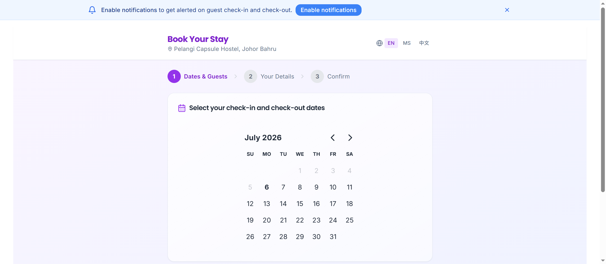
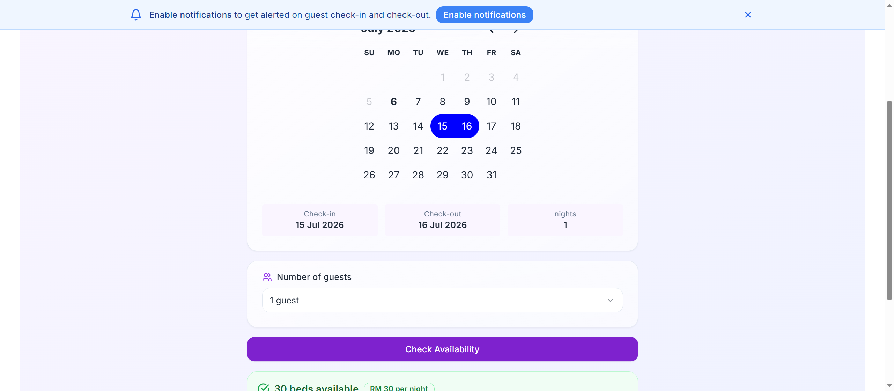
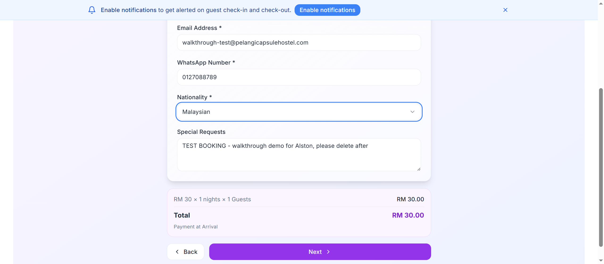
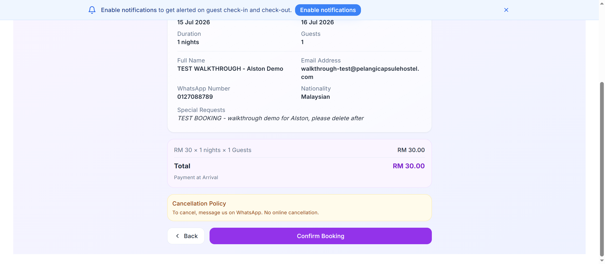
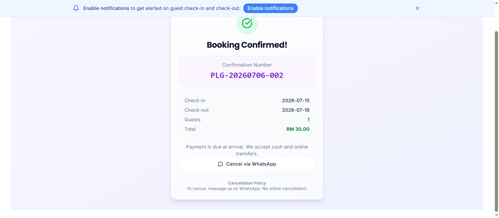
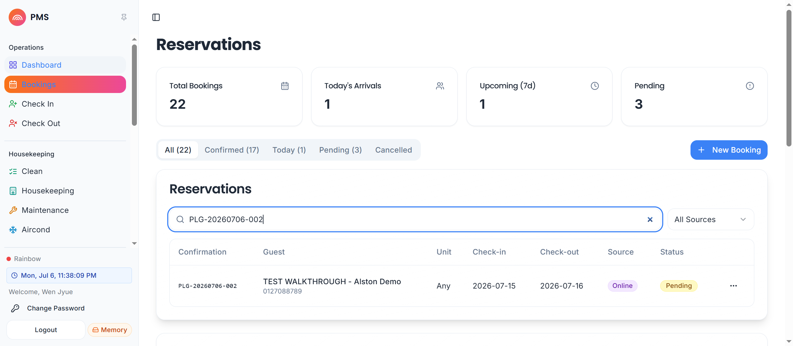

Yes. Verified end-to-end on the LIVE system, 6 Jul 2026. — for Alston
On pelangicapsulehostel.com/book — chooses check-in 15 Jul, check-out 16 Jul, 1 guest.

30 beds available, RM30/night weekday rate, total RM30, payment at arrival. This price/availability comes live from the PMS.

Name, email, WhatsApp, nationality, special requests. (Here filled as a clearly-labelled TEST.)

Final review screen, then presses Confirm Booking.

Guest sees PLG-20260706-002. This number is generated by the PMS at the moment of saving — proof the booking is already in the system.

Open pms.pelangicapsulehostel.com → Bookings. The same PLG-20260706-002 is there: guest name, 15→16 Jul, Source: Online, Status: Pending. Staff just assign a capsule and check the guest in. (This test booking was cancelled right after the screenshot, so it no longer occupies a bed.)

Notes for Alston: Online website bookings arrive as Pending with no capsule assigned yet (shows "Any") — that's normal; staff assign the unit at check-in. They sit alongside OTA bookings (Agoda/Booking.com = "STP-" numbers). Website direct bookings use "PLG-" numbers. Payment is collected at arrival (cash / online transfer).